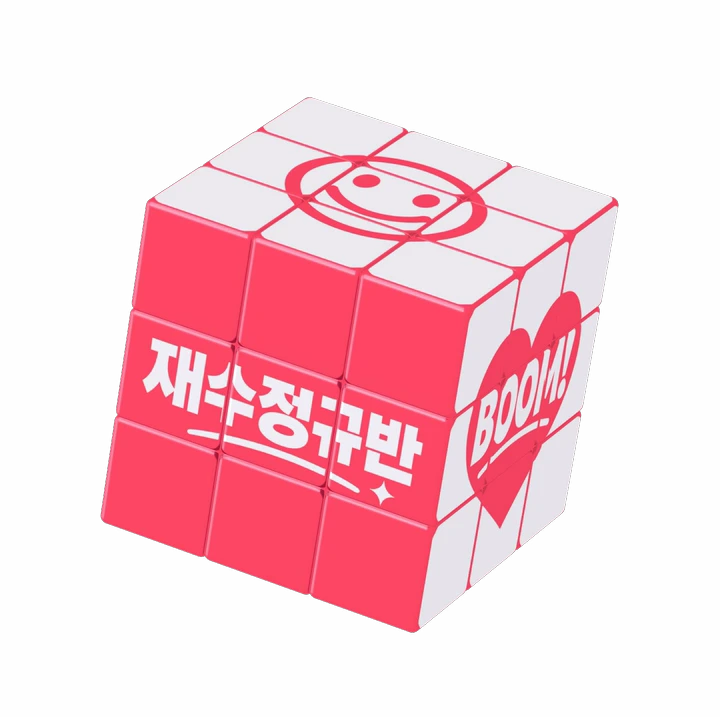

누적된 몰입공부 시간, 합격으로
BOOM!
2028학년도
통학 재수정규반
모집 대상
2028학년도 N수생 / 검정고시생
접수 방법
온라인 사전 예약 (추후 방문 결제)
입학일
2027.02.15(월) ~

KV 큐브 영상 내려받기
mp4 · 720
3.9MB
mp4 · 1440 고화질
11.5MB
투명 배경 webm · 720
4.1MB
투명 배경 영상(webm)은 편집 프로그램용입니다. 웹에서는 mp4를 씁니다.